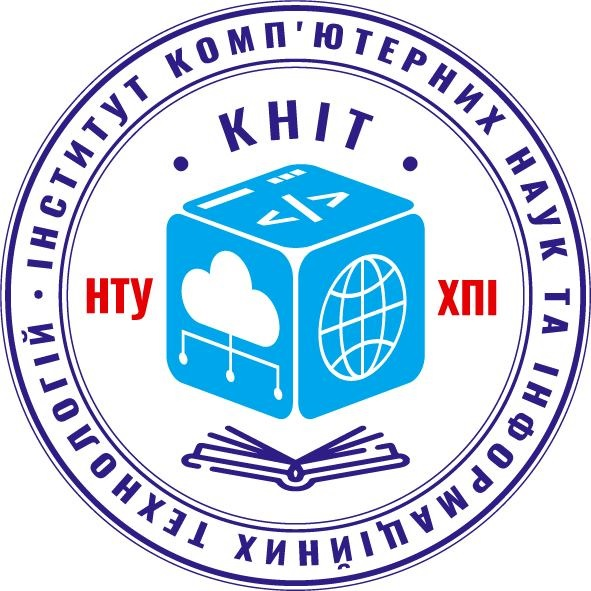
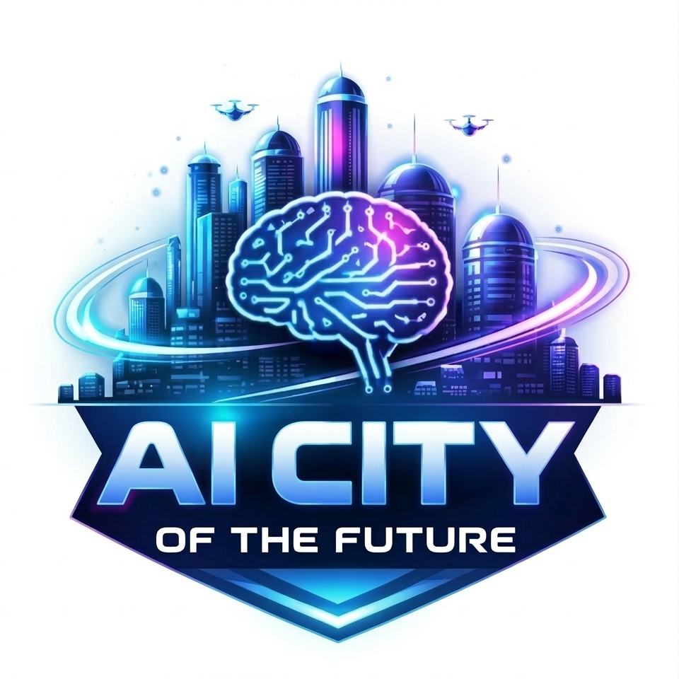

Багато теорії, мало практики
Молодь отримує сильну теоретичну підготовку, але бракує середовищ, де можна застосувати знання до реальних кейсів з ІТ, бізнесу та управління.


Інститут комп'ютерних наук та інформаційних технологій НТУ "ХПІ"
ІТ-хакатон для старшокласників Кропивницького з прикладного ШІ, управління проєктами та стартапів. Формат для тих, хто хоче не просто слухати лекції, а створювати реальні рішення для розвитку свого міста!
Чому це важливо
Молодь отримує сильну теоретичну підготовку, але бракує середовищ, де можна застосувати знання до реальних кейсів з ІТ, бізнесу та управління.
Рідко поєднуються в одному просторі технології, управління проєктами та підприємництво. Хакатон створює точку перетину для цих трьох вимірів.
Учасники отримують середовище для командної роботи, розвитку комунікації, лідерства та інноваційного мислення через формат хакатону.
Про хакатон
Мета хакатону — створити освітню платформу, яка поєднує технології, управління проєктами та підприємництво в одному інтенсивному форматі.
Формат хакатону підійде всім, хто хоче здобути або оновити практичні навички, попрацювати з менторами з ІТ-компаній та протестувати власні ідеї у безпечному, але конкурентному середовищі.
Напрями навчання
Прикладний ШІ для реальних задач: від прототипів до перших робочих рішень, які можна масштабувати.
Управління проєктами в ІТ: планування, ролі в команді, дедлайни, ризики та презентація результатів.
Шлях від ідеї до прототипу: ціннісна пропозиція, базова бізнес-логіка, пітчинг та фідбек від менторів.
Формат та програма
Формування оргкомітету, узгодження дат та партнерів, реєстрація команд, формування журі, створення та налагодження ефективних каналів зв'язку для учасників, менторів та організаторів хакатону.
06.04.2026 · Урочисте відкриття, привітання учасників та ознайомлення з правилами та завданнями. Виступ представників міжнародної компанії Huawei: експерти поділяться своїм досвідом та баченням майбутнього ІТ-сфери.
07 — 09.04.2026 · Лекції від представників провідних ІТ-компаній Huawei, NIX, GlobalLogic та N-iX: серія лекцій та майстер-класів з актуальних тем і перспектив розвитку ІТ-галузі в Україні та світі.
Формування ідей проєктів: учасники отримають рекомендації щодо генерації та відбору ідей для своїх інноваційних проєктів, спрямованих на розвиток цифрових технологій у Кропивницькому.
Виступи кафедр ННІ КНІТ: представники кафедр інституту представлять свої наукові досягнення та перспективні напрямки досліджень (стартапи, управління проєктами, нтучний інтелект), що можуть стати основою для розробки та комерціалізації власних інноваційних проєктів.
Консультації: команди отримають індивідуальні консультації від викладачів, менторів та ІТ-фахівців, які допоможуть у розробці та вдосконаленні їхніх майбутніх проєктів.
Командна робота (team-building): інтенсивна практична робота в командах над реалізацією обраних ідей, застосування отриманих знань та навичок від менторів провідних IT-компаній та представників кафедр ННІ КНІТ НТУ «ХПІ».
Підготовка презентацій: команди створюватимуть та відточуватимуть презентації своїх проєктів для майбутнього захисту перед журі, навчаючись ефективної комунікації та представлення ідей перед аудиторією, ефективно відповідаючи на запитання колег та проведення дискусій з журі (представники Управління освіти Кропивницької міської ради).
Захист проєктів: кожна команда представить свій інноваційний проєкт, його концепцію, реалізацію та потенціал для розвитку Кропивницького.
Оцінювання журі: незалежне журі, що складається з експертів галузі та представників управління освіти Кропивницької міської ради об'єктивно оцінить кожен проєкт за визначеними критеріями.
Нагородження: визначення переможців та вручення цінних призів, що мотивуватиме до подальшого розвитку та участі в подібних ініціативах.
Сертифікати: усі учасники отримають сертифікати, що підтверджують їхню участь у хакатоні та здобуті навички.
Команда
6 квітня 2026 року, о 16:00 (онлайн у Zoom)
PR – cпеціаліст «Huawei Ukraine»
Project Manager Huawei ICT Academy Ukraine
Тема: «Огляд напрямків діяльності компанії Huawei. Освітні можливості від Huawei в Україні»
7 квітня 2026 року, о 16:00 (онлайн у Zoom)
Менеджер Корпоративного Центру навчання NIX
Project Manager Huawei ICT Academy Ukraine
Тема: «Про IT – сферу, напрямки та перспективи розвитку»
8 квітня 2026 року, о 16:00 (онлайн у Zoom)
Senior Solution Architect у GlobalLogic
Доцент кафедри управління проєктами в інформаційних технологіях ННІ КНІТ НТУ «ХПІ»
Тема: «Про IT – сферу, напрямки та перспективи розвитку»
9 квітня 2026 року, о 17:00 (онлайн у Zoom)
Senior Solution Architect у GlobalLogic
Доцент кафедри управління проєктами в інформаційних технологіях ННІ КНІТ НТУ «ХПІ»
Тема: «Про IT – сферу, напрямки та перспективи розвитку»
14 квітня 2026 року
Доктор технічних наук, професор
Завідувачка кафедрою системного аналізу та інформаційно-аналітичних технологій ННІ КНІТ НТУ «ХПІ»
Тема: «StartUp: розвиток інновацій від ідеї до бізнесу»
15 квітня 2026 року
Кандидат технічних наук, доцент
Завідувачка кафедрою управління проєктами в інформаційних технологіях ННІ КНІТ НТУ «ХПІ»
Тема: «Командна робота над ІТ-проєктом із використанням фреймворку Scrum»
16 квітня 2026 року
Кандидат технічних наук, доцент
Завідувачк кафедрою програмної інженерії та інтелектуальних технологій управління ім. А.В. Дабагяна ННІ КНІТ НТУ «ХПІ»
Тема: «Практичний інтенсив зі створення сучасних вебрішень за допомогою AI-асистентів»
17 квітня 2026 року
Командна та індивідуальна робота учасників зі спікерами, фінальна підготовка презентацій та репетиція презентацій кінцевих продуктів та spitch перед менторами
18 квітня 2026 року
Презентація фінальних продуктів перед менторами та журі (представники Управління освіти м. Кропивницького, директори ЗЗСО)
Вручення цінних подарунків, сертифікатів учасників переможцям Інноваційного хакатону та Інноваційного конкурсу Кропивницький майбутнього
Після завершення
Онлайн-спільноти учасників, можливість залишатися в контакті з менторами, обговорювати проєкти та запускати нові ініціативи.
Готовність брати участь в нових хакатонах та інших тематичних подіях, презентувати власні напрацювання та отримувати фідбек.
Доступ до бібліотеки матеріалів хакатону та оновлень програми, а також система зворотного звʼязку через опитування та комунікацію з менторами.
Готові до хакатону?
Залиште заявку, а деталі щодо онлайн-зустрічей, офлайн-локації та умов участі будуть повідомлені пізніше